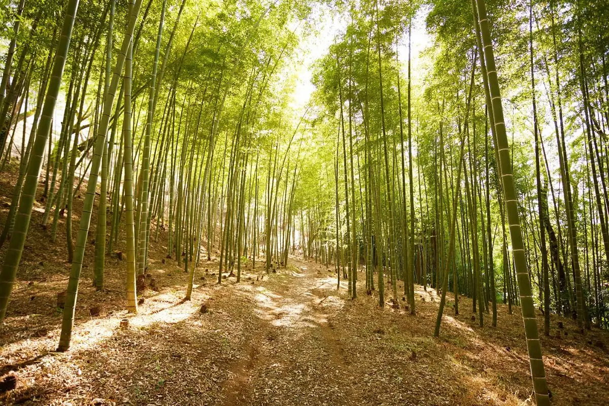
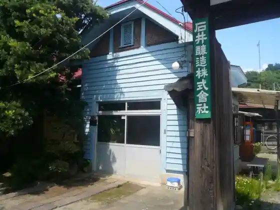
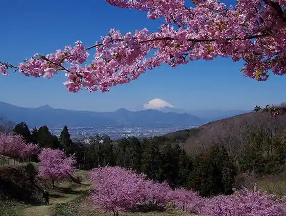
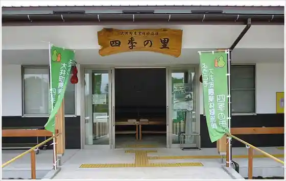

Oimachi
Oimachi · Kanagawa
Oimachi
Highlighted on the Kanagawa map.

Sights
me-byo valley BIOTOPIA (Biotopia)
Ishii Jozo

Oiyume Village

Oimachi Nogyo Taiken Shisetsu Shiki Village

Konkontofiirudo (Buruberii Garden Asahi)

Oimachi Matsuda Joba Club
Inoe Shuzo
Hyotan Ike
Seseragi no Sato Hanashobu Sono / Suihen no Plaza